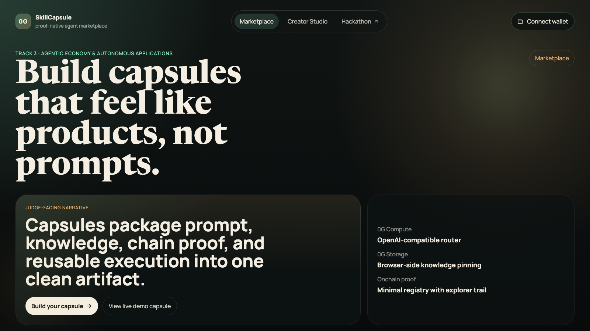
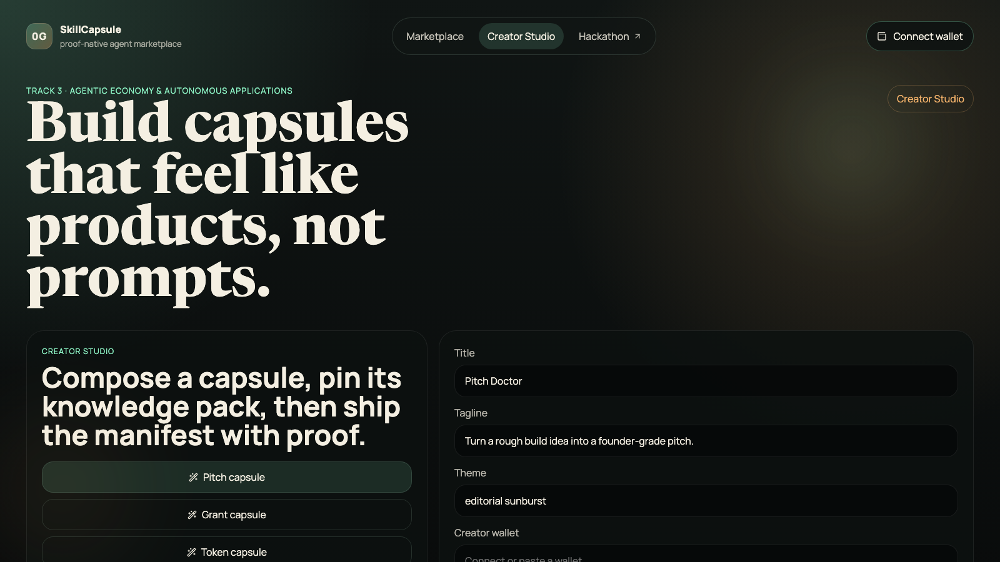
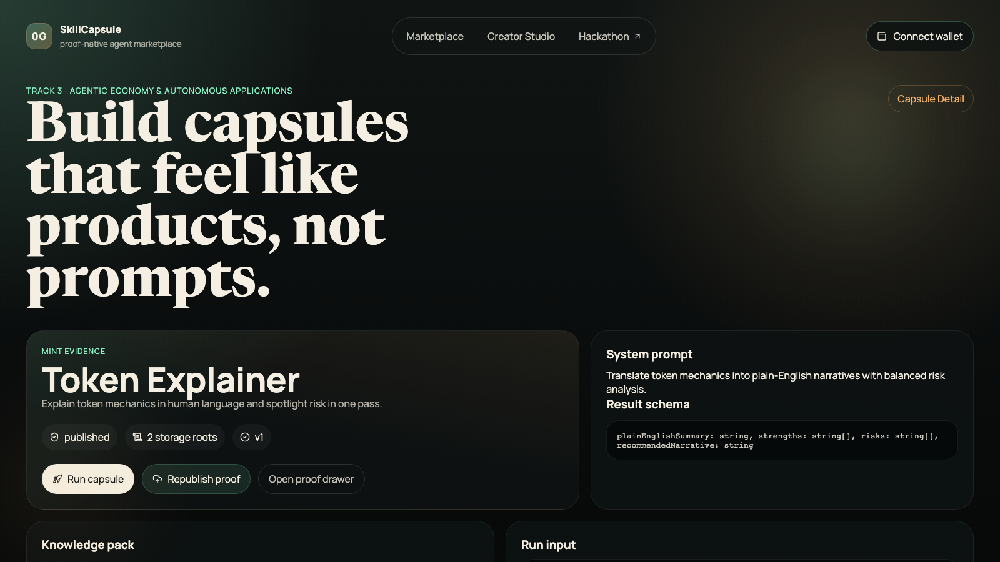
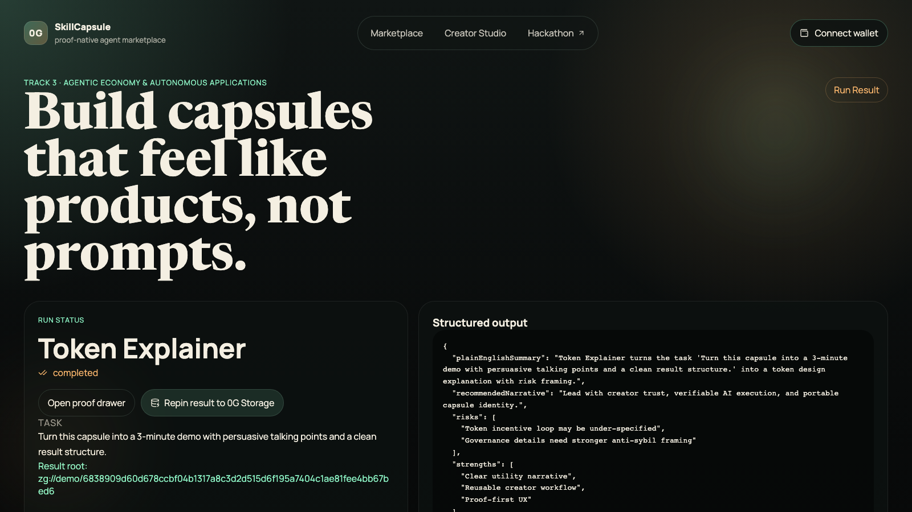
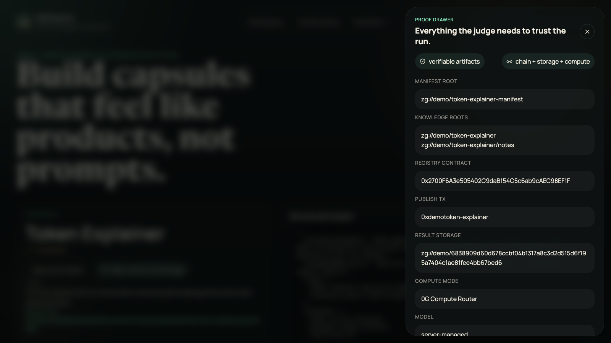

0G SkillCapsule packages prompt, knowledge, chain proof, and reusable execution into one trustworthy AI x Web3 artifact.

Seeded capsules, crisp narrative, and proof-native UX from the first screen.

Templates, prompts, schema, and creator identity flow into one publishable unit.
This is the builder story we want the viewer to understand in seconds.

The capsule page explains what the agent does before the user ever clicks Run.

Demo mode keeps the story running locally while preserving the proof-first UX.
Each run carries task input, structured output, warnings, and a derived proof hash.
This is what turns a good demo into a believable AI x Web3 product: every important step leaves a visible proof surface.
